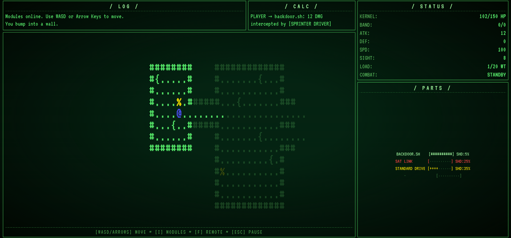
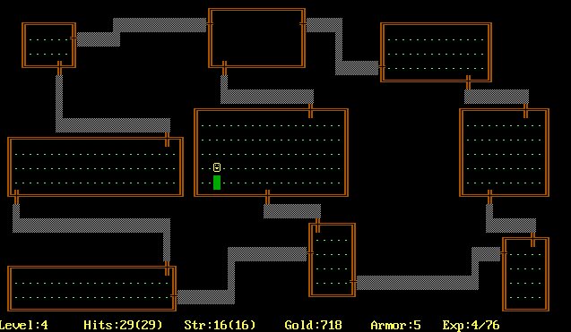
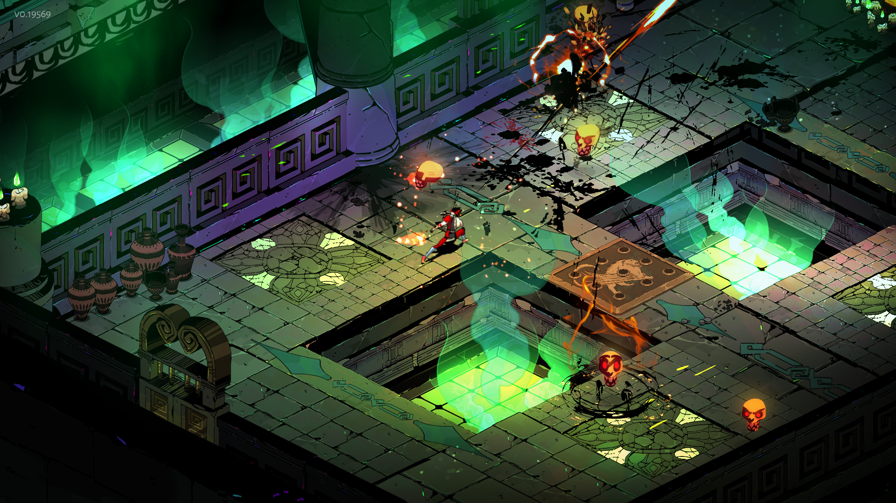
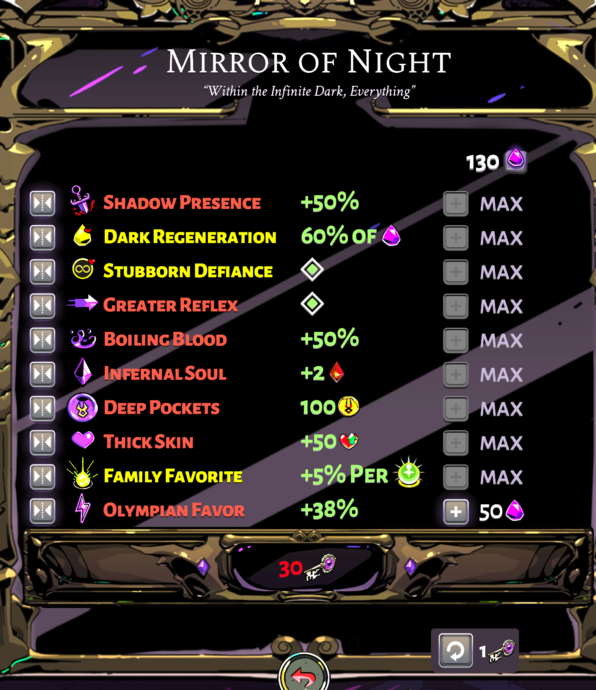
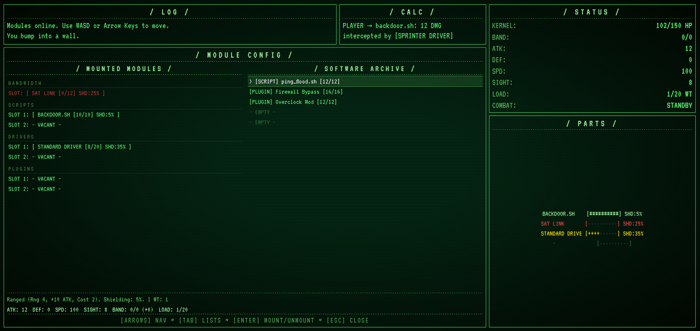

Wow! Two posts in a week? Don’t get used to it. :)
But, I thought I’d give a site update to everyone. As may be obvious by the title of this post, foxClaw is under development. foxClaw (yes, the f is lowercase) is going to be… much more than the other two games. Between Repair and foxHound, those two were mostly just me messing around and seeing just what I could do with javascript in a browser.
Now, originally I was planning on making an incremental idle game of sorts where you could write your own hacking scripts in order to steal funds and progress through the game. I even had some plans as to how I could include the website’s code itself in the progress of that game. Ultimately, I decided to scrap that idea.
The current version of foxClaw is the one I want to talk about today. As it stands, foxClaw is a roguelike game in which you control a Kernel packet as you explore the various networks connected to the foxOS terminal. Fight daemons, sniffers, watchdogs and the dreaded Firewalls as you uncover hidden secrets in each subnet and slowly discover the truth behind foxOS and the shape of the world itself.
Protect your Kernel by installing modules to increase your capabilities. Modules act as equipment and affect everything from what attacks you can do, to movement, sight range, and more. Every Module you install has a chance to absorb damage meant for your Kernel and take the hit instead. Too many hits, and your modules will become corrupted and get destroyed.
Enemies follow the exact same rules as you. If you install the same modules a network daemon has, you will be exactly as effective as they are. The only difference between you and the enemy, is that your Kernel has much more health.
That’s my pitch. Still interested? Cool. Now we get to the nerdy stuff.
As with any game, before you can code the cool stuff, you gotta do the boring stuff. Character movement, inventory, map gen, etc. Right now I am at the point that I am comfortable calling it Alpha 1. I can generate a world to move around in, spawn in some enemies, kill, die. There’s a rudimentary inventory system where you can swap modules and… that’s about it.

This is foxClaw as it appears now. The most immediately obvious thing is… color! If you’ve been exploring my website for a while now, you’ve very much grown used to the color green. Or amber. Either way, my site would never win any awards for depth of color.
For the first two games, this worked just fine. They’re simple things that don’t have much going on. The aesthetic fits. With foxClaw however… that’s not quite the case. At any one moment there is a LOT to take in all at once. You, enemies, items, what’s interactable and what isn’t, the current status of installed modules, etc etc. So… I’ve broken from the 1980s terminal monochrome phosphor theme to add color purely for playability reasons.
Now, before I talk about my game… I need to talk about other games, first.
If you’ve never seen a “classic” roguelike before, let me first say that I’m sorry. That must suck. Secondly, let’s go into a little history lesson!
To anyone that is involved in modern gaming, that should be a pretty familiar word. Roguelikes like Soulslikes (heh, say that five times fast) both describe exactly what they are… and don’t. The Roguelike genre is, well, like Rogue. Just as Soulslikes are like Dark Souls (or Demon Souls, depending on who you’re talking to). Fun fact: First-Person Shooter games used to be called Doom Clones before the genre got its own name. So, to all the people that complain about “soulslike” not being a descriptive genre name and how the Souls games weren’t even the first soulslikes, we’ve always referred to certain genres by their most influential games.
But… what exactly IS Rogue? I’d be shocked if more than a single digit percent of people that ever read this has even seen Rogue, let alone played it.
Rogue is a game released in 1980 and was developed by Michael Toy and Glenn Wichman. Ken Arnold later joined the duo but didn’t have nearly the same level of contribution. In Rogue, you control a nameless hero in your search for the powerful Amulet of Yendor located on the lowest level of The Dungeon. The game is turn-based, taking place on a grid of ASCII based characters. And… that’s all you pretty much need know. Oh. And the world is procedurally generated. Yep. Rogue used proc gen before it was in vogue. Except for them it wasn’t a design choice, it was a requirement. At the time, there simply wasn’t enough memory available for the game to hold a static map in memory so the level had to be generated from scratch every single time. Everything from layout to enemy placement to items was randomly generated every time a new level was loaded. This had the added benefit of making each run completely unique.
You may be wondering what this beacon of gaming culture looked like. Well, look no further! Behold! Rogue!
Pretty whelming, huh? That was the glory of the original games. They didn’t have graphics as we think of them today. As evidenced here, even the existence of color is debatable! (See, I could have been mean and made foxClaw monochrome as well. You should thank me.)
Now, you look at this screenshot and see some lines, hashmarks and symbols. I look at this screenshot and I see damp dungeon rooms with dark corridors, scrolls(?), some food(%), and of course… the player(@). This is why most ASCII based roguelikes use @ to represent the player-character. Everything else is up for grabs, however. Enemies tend to be letters and yes, there’s a difference between d and D. “d” might be a simple dog while “D” might be a Dragon.
Rogue didn’t stay like that for long, however. Within just a few years our intrepid developers quickly released more advanced versions of the game.

Nice! Color! And now it’s pretty obvious what we’re looking at! But, nerds are nerds and we love to harken back to the days of yore. No no, not those days. Farther. FARTHER! I jest. Sorta. There are people out there that will insist that if you use anything but ASCII (the first 128 characters in the Unicode standard) then it’s not really a “traditional” roguelike but those people can pound sand. Ask any ten people what roguelikes are and you’ll probably get ten variations of “who are you?” and “how did you get in my house?” But if you ask ten gamers what roguelikes are, you’ll likely get ten different descriptions.
Now that we know where the term roguelike comes from, we can talk about what a roguelike is. Ostensibly, a roguelike is a *ahem* style of roleplaying or action adventure game characterized by a dungeon crawl through procedurally generated levels, turn-based gameplay, grid-based movements and permadeath. Thanks Wikipedia!
In popular media, it’s rare to see a true roguelike. More often, those games are what we call a rogueLITE. Kinda like roguelikes, but they don’t weigh as much. And by weigh as much, I mean they don’t mercilessly crush your spirits. Roguelites typically have meta progression mechanics (that is, ways to progress between each attempt). Things like more starting health, better starting equipment or, blasphemously, the ability to unlock respawns. The horror, I know!

Hades here is a perfect example of a roguelite. Each run follows roguelike rules. Proc gen, random room layouts, enemies, etc. But between each run you have things like the Mirror of Night here that can give you some significant boosts. By the end of Hades, Zagreus (fun fact, my black cat is named after him), is significantly stronger at the start of a new run than he is on a fresh file.

Now, this isn’t to say that Hades cannot be beaten without the Mirror. Indeed, there are some people who make it a point to beat the game on the very first run of a save file.
All this to say… if you call a roguelite a roguelike, you’ll probably get well ackhually’d by an angry nerd. If you call a roguelike a roguelite, however… god save your soul.
So, to recap. Roguelike = every attempt is isolated from the last. The only thing that carries over between runs is your personal knowledge of the game and the mechanics. Roguelite = progression mechanics that makes subsequent runs easier than the last attempt.
You’d think that this would mean Roguelites are the more difficult games, right? Since they’re balanced around you being able to increase your base power and all?
Actually, no. Roguelites tend to be easier and that’s largely because many roguelikes have absolutely no qualms about killing off your top level character you’ve been playing for the last eight hours because you made a mistake and forgot that a dark grey L is an ELDER Lich while a light grey L is only a normal Lich and you’re stupid for getting them confused now say goodbye to your character and save file! No, I’m definitely not still bitter about that, why do you ask?
Because we’re masochists. Next question?
I jest. You’d think that from the way I’ve talked about them so far. Brutal difficulties, permadeath, etc. But what makes them so compelling is that modern Roguelikes tend to be some of the most complex games you can find. And that’s largely thanks to the simple graphics and animations they employ. If I want to create a new enemy, my design might look like this:
G
Greater Demon of Hellfire
Attack power: You dead
Defense: lol good luckVoila. An enemy.
Okay, so it’s more complicated than that but honestly? Not by much.
Now think of a typical game. I’d have to create a model for it, textures, animations, sounds, etc. etc. That’s a lot of time invested. It’s why in games like MMOs you’ll often see the same exact enemy model reused over and over again and the only difference between a level 10 wolf and a level 20 Dire Wolf or a level 50 Dire Wolf of the Abyssal Nightmare is that the texture is different. This is called a reskin. Same model, different skin. But even that little of a change between our puppers takes time. In a roguelike, you’d just have three different colored ‘w’ glyphs. (Remember, w is for wolf. W is for Wyvern or something.)
So, you see the power here? In the time it takes a normal game developer to create a single entity, I could have dozens of enemies lined up and ready to go!
Beyond enemies though, there’s another benefit. Mechanical complexity. In roguelikes, it’s very common to have the ability to do some wild shit that you’d almost never see in traditional graphic based games. Want to eat the corpse of that Greater Demon of Hellfire you killed? Go ahead! You’ve now gained fire immunity. Oh, and you’re also permanently wreathed in flames so if you walk into a forest you’ll burn the whole thing down. That’ll piss off the Elves and they’ll start to send death squads after you.
For a graphical game, that would be a LOT. For a roguelike… that’s actually pretty tame. While I won’t get into it here, if you want to get a better idea of the kind of things you can run into, look up Dwarf Fortress if you haven’t heard of it. While it isn’t a roguelike (it’s a colony management simulation - one of the very early precursors to Rimworld, for example) it uses ASCII graphics and has been in active development for the past 24 years. That’s right. Dwarf Fortress can legally drink in the United States. Think about that for a second. Over two decades of ideas crammed into a single box. Oh. And it was made by two brothers. Just two.
How many hundreds of people work on a standard AAA release? Yeah. In terms of mechanical complexity and depth, Dwarf Fortress blows every single one of them out of the water. Hell, it wasn’t until 2022 that DF got an official graphical version for the Steam release. Before that, you either had to deal with ASCII graphics or download a graphics pack made by one of the fans.
Comparing Skyrim to your standard roguelike would be like comparing a lightbulb to the out of the freaking sun itself. And I honestly do not believe I am being all that hyperbolic.
No I didn’t. I just really wanted to talk about one of my favorite genres. And its relavent (relevant? ralevent? You know, there are just some words I never learn how to spell. Spellchecker? Joke’s on you, my writing program doesn’t have one!) But fine. Devlog. Whatever.
I gave a brief pitch of foxClaw earlier but didn’t really get into… well, anything. So… here we go!
Here’s the initial screenshot again as a refresher, and so that you can reference it as needed.
If you remember when I talked about Rogue, you might be able to decipher this a bit better now! The Kernal Packet that represents the player-character is the blue @ smack in the center of the screen. That yellow % glyph is an item. # glyphs are the walls and . glyphs is just… the floor. The { } glyphs are floor as well, but different. Just to break things up a bit, y’know? I guess you could think of them as bits of data. Idfk. It’s your imagination. Use it! <3
Above the main viewport, we’ve got two logs. The message log to pass on non-combat related stuffs and the combat log (temporarily named Calc because just calling in Combat didn’t feel right) for… well, combat stuff.
While I won’t go into every detail of the Status pane as many of those terms may change or whatever else, you can probably decipher most of it on your own.
The Parts pane lists currently installed modules (read: equipped items) and their current durability/cohesion.
Oh, and here’s the inventory screen. I’ll leave you to decipher this one on your own.

I will, however, briefly talk about the modules type.
In foxClaw, there are four module types. Bandwidth, Drivers, Plugins, and Scripts.
Bandwidth modules are like your mana/energy items. Every move you make, every attack, etc consumes Bandwidth. While a naked Kernel has some bandwidth of its own, it’s not much. Slap a few modules on and you get more. Modules can be high-capacity low generation, low-capacity high generation or a hybrid between the two. You’ll need to find a balance between your capacity, generation and Load that fits your current setup. Next!
Drivers are the movement modules. Because you know, they’re Drivers? I’m hilarious. Anyway, these puppies dictate two main stats. Speed and Load. (I need a better name for Load.) Your base speed is 100 (I’ll get into movement mechanics soon). Drivers can make your faster… or even slower. Load determines how much encumbrance you have. Each equipped module takes a certain amount of Load. Too much Load and your speed will begin to drop. And this penalty can be harsh. A driver designed for speed (say, 250 speed while installed) might suddenly find its speed cut down to 60 or even lower for just being a few Load points over. A slower Driver (which cuts your base speed down to 80) might be able to go double over its Load limit before its speed drops to half.
Plugins are the hardest to describe. They’re basically auxilary or utility items. They cover everything else. A Plugin might let you see farther, or provide a lot of shielding, or increase how many modules you can archive (read: carry in your inventory). Basically, if it doesn’t generate, go zoom, or boom it’s a Plugin.
Speaking of boom. Scripts are your bread and butter. Or… bits and bytes? What’s the digital equivalent of that? Whatever. They’re weapons. Split between two types Local (melee) and Remote (ranged). Some will be rapid fire low damage, others will be slow fire high damage. Some might be like shotguns or sniper rifles, others missile launchers. Themed appropriately, of course. Local plugins will be a high-risk high-reward playstyle. Since you gotta get up close and personal, Local plugins will, turn for turn, do more damage than the Remote plugins. Of course, you need to close that distance first.
One system that will eventually be added could be thought of as damage types. Some types of damage might really shred through modules to expose the enemy kernel faster, others might be better at bypassing installed modules completely. I’m unsure as of yet. The biggest struggle I’ve had so far with things is making sure that it still adhere’s to the networky/hacking vibe of the game. You’d think as a retired Navy IT this stuff would be easier to come up with, but I gotta brush up on all my networking terms heh.
Earlier I mentioned something called shielding. While this is, again, a temporary name you can essentially thing of it as coverage or size. Each module acts as a layer of armor and health for your kernel. (Fun fact: every time I type that I want to say kernal. No idea why.) The higher the shielding, the more likely a module is to be hit. So, what does this mean?
Well, in the immortal words of Josh Strife Hayes:
Combat in foxClaw has three phases. The first phase decides whether or not you hit at all. If there’s a hit, we need to decide what was hit. This is a little more complicated that “did we hit a module or kernel”. Let me explain.
When a global hit is registered, we take a look at the installed modules of the defender. For our purposes, let’s say those modules have a shielding rating of 30%, 20% and 5%. Your instinct might be to just add those numbers together and assume there’s a 55% chance to hit a module and a 45% chance to hit the kernel. But that’s not quite right. Remember, each module has its own durability.
What happens instead is each module is checked against the hit in sequential order, acting as probalistic armor.
Module 1 has a 30% chance to be hit. If this succeeds, it takes the damage and we’re done. If it fails, however…
Modules 2 has a 20% chance to be hit. Again, if the check succeeds, it takes the damage.
If the first two modules fail to take the hit, module 3 is checked with it 5%
Only if all 3 modules fail their checks, does the kernel take damage.
This system means that modules with higher shielding are much more likely to be hit during combat, but are never guaranteed protection. Even if the total shielding of equipped modules equals or exceeds 100%, your kernal can still take damage.
Movement is another thing that I want to touch on briefly. I threw out a few numbers earlier and you’re probably wondering wtf they mean and how they interact with a turn-based game. As mentioned, 100 is the base speed. If you have 100 speed and an enemy has 100 speed then they can move one tile for every one tile you move. From here, it’s pretty obvious how things work. If you have a speed of 200, then you can move two tiles before the enemy gets to move one. Or vice versa. The important thing to remember is that these are not turns.
Under the hood, this is managed by a “point banking” system where your current speed stat is how much the enemy needs to “bank” before they’re allowed to move every time you press a direction key. Once their banked points exceed your speed, they can spend their points to move until their bank is below your speed stat. Once that happens, they lose all remaining banked points and it becomes your turn once more (or they attack if we’re talking about combat and they’re in range). So yes, if you only have 50 speed and an enemy has 200, then they will be able to move 4 tiles for every one tile that you get.
Fast enemies will be almost impossible to run away from if you’re slow. Of course, fast usually means light and fragile so like everything else, you’ll have to balance speed and survivabilitiy.
Outside of combat and items, the only real system right now is network topology. This is my fancy talk for the world procedural generation. As with real life networking, each level will by styled off of a particular topology. Mesh, Ring, Star, Bus, Tree or Hybrid. I’ll go into more detail about each topology when I talk about the finished procgen (right now it’s barely a proof of concept) but you can probably get an idea of what each level could look like based on their network maps.
Before I wrap up, let me talk about the future for a moment. The proc gen needs to be worked on before I can do much else. Right now, rooms are just slapped down in a rough line and then connected by corridors. In fact, the level layout of 1980 Rogue is more varied than foxClaw at the moment. For now, building a graph of the different topologies and how they affect node placement would do wonders for the feel of foxClaw overall. Once I nail that, then I’ll be able to begin fleshing out individual subnets to make them more distinct from each other through the placement/types of enemies, lore, types of modules, etc that you can find on them.
From there, well, anything goes, I suppose. There will always be new enemy types to add, more things to explore, and systems to build. I didn’t even mention the CLI hacking minigame that will be there.
And that’s it! I hope my tangent didn’t scare you off and foxClaw sounds enticing enough to come back and check it out and follow along with development. If you’ve never heard of or played a roguelike before then I highly recommend you check out some games in my favorite genre. Some notables include:
The Official Ancient Domains Of Mystery (ADOM) Homepage Now with graphics!
Rogue (1985) | PCjs Machines I’m sure there’s an earlier version out there but this is the one I know of.
If those scare you off, then consider the absolutely vast genre of roguelites.
Hades (there’s also a Hades II now!)
Balatro A poker roguelite. Trust me, it’s awesome. I’ve lost many hours of my life to this one.
And, while it’s not a roguelike, I did mention it so here ya go.
You know, maybe in the future I’ll do a deep dive into each of my favorite roguelikes and what makes them so special to me. Maybe a playthrough discussion of Rogue itself?
Ciao~
CV